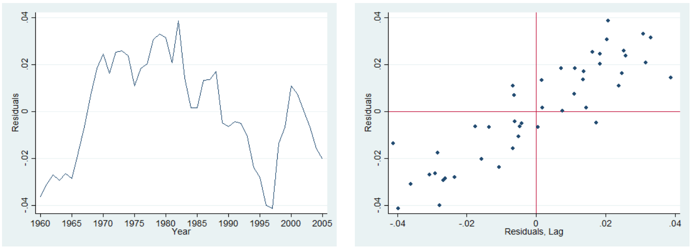
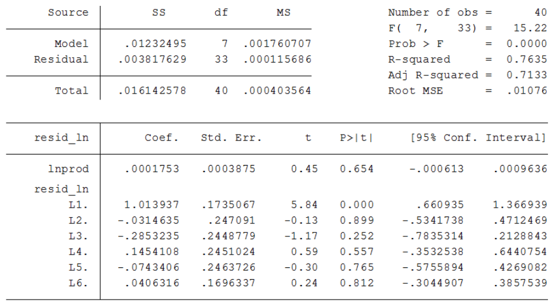
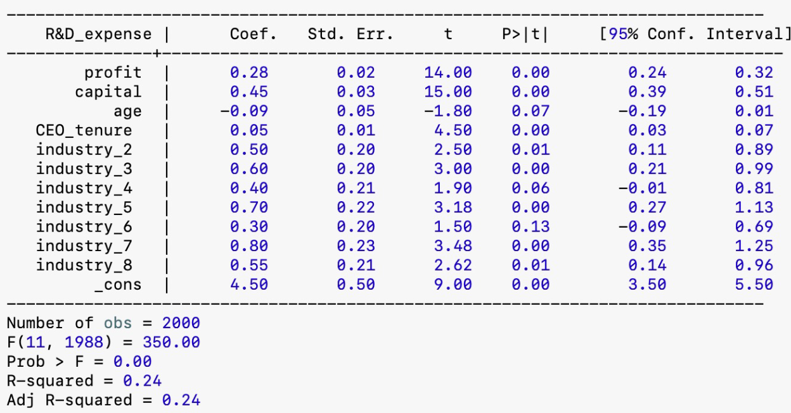
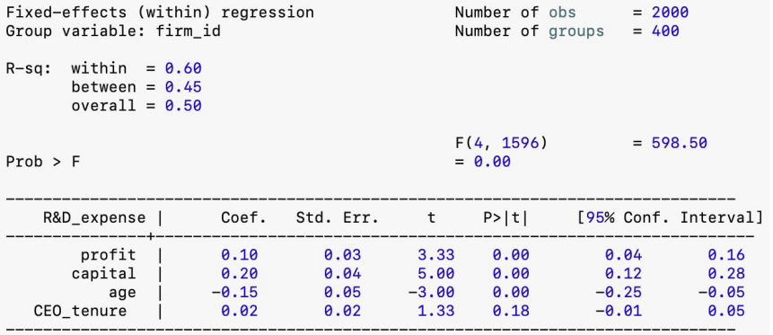

Below you have the plot of the residuals from the regression along time (left) and the plot of the residuals against their first lag (right). What can you conclude regarding serial correlation?

Exercise 11.5-b
The Durbin-Watson (DW) for the above regression is 0.218. What do you conclude? State the null and the appropriate alternative for this test. What are the critical values that you consider for this test? Why?
Exercise 11.5-c
A higher order of autocorrelation (6) was tested using the Breusch-Godfrey tets. What do you conclude from the output of this test, provided below?

Exercise 4.5-d
Suspecting model misspecification, a trend was added to the initial model. Considering the reported estimates below, what do you conclude? Is there still eevidence for autocorrelation?
Three alternatives were cosnidered in order to corect for autocorrelation:
Initial model in first-differences \(\widehat{\Delta \ln Comp_t}=\underset{(0.057)}{0.654}\Delta \ln Prod_t\) with \(DW=1.74\)
Model with trend in first-differences \(\widehat{\Delta \ln Comp_t} = \underset{(0.003)}{0.001}+\underset{(0.109)}{0.619}\Delta\ln Prod_t\) with \(DW=1.71\).
Quasi-differenced initial model (Cochrane-Orcutt esitmation): \[\widehat{\ln Comp_t}=\underset{(0.192)}{1.955}+\underset{(0.042)}{0.577} \ln Prod_t^*\] with \(\hat{\rho}=0.869\), \(DW=1.70\)
Is the problem of autocorrelation solved?
Exercise 4.5-f
Consider the following heteroskedasticity test for the initial model:
\[\hat{u}_t^2=\underset{(23.64)}{94.27}-\underset{(0.514)}{1.836}\widehat{\ln y_t} + \underset{(0.003)}{0.009}\widehat{\ln y_t}^2\] with \(n=46\) and \(R^2=0.296\)
What do you conclude? Is there a solution for both serial correlation and heteroskedasticity?
Exercise 4.5-g
Consider the following estimates for the initial model with \(Newey-West\) standard errors. How do they compare with theusual standard errors?
You are provided with a panel dataset of 400 firms observed over 5 years (from 2015 to 2019). The dataset includes the following variables:
irm id: Firm identifier.
year: Year of observation.
R&D expense: Annual R&D expenditure (in millions of dollars).
profit: Annual profit before tax (in millions of dollars).
capital: Total capital stock (in millions of dollars).
industry: Categorical variable indicating the industry sector (values 1 to 8).
age: Age of the firm (in years).
CEO tenure: Tenure of the CEO (in years).
Exercise 12.1
You are interested in studying the determinants of R&D expenditure, focusing on how profit, capital stock, and industry sector influence a firm’s investment in R&D. Below are outputs from statistical software for three models estimated using this dataset.

Pooled
Exercise 12.1
You are interested in studying the determinants of R&D expenditure, focusing on how profit, capital stock, and industry sector influence a firm’s investment in R&D. Below are outputs from statistical software for three models estimated using this dataset.

Fixed Effects
Exercise 12.1-a
Explain the main differences between the pooled OLS model, the fixed effects model, and the random effects model in the context of this study on R&D expenditure. Discuss the assumptions underlying each model, especially regarding the inclusion of the industry variable.
Exercise 12.1-b
Based on the outputs provided, interpret the estimated coefficients for profit and capital in all three models. Discuss why the estimates for these variables might differ among the pooled OLS, fixed effects, and random effects models.
Exercise 12.1-c
The fixed effects model does not include the industry variables in the output. Explain why this occurs and discuss the implications for interpreting the effect of industry sector on R&D expenditure.
Exercise 12.1-d
Explain why the constant term is omitted in the fixed effects model. How are the firm-specific intercepts and time-invariant variables handled in this model?
Exercise 12.1-e
Considering that CEO tenure may change over time for each firm, discuss its estimated effect in each model. Based on the outputs, does CEO tenure have a significant impact on R&D expenditure? How might the interpretation differ across models?
Exercise 12.1-f
Discuss how unobserved heterogeneity might affect the estimates in the pooled OLS and random effects models, particularly regarding the industry variable. Why might the fixed effects model provide more reliable estimates in the presence of unobserved heterogeneity?